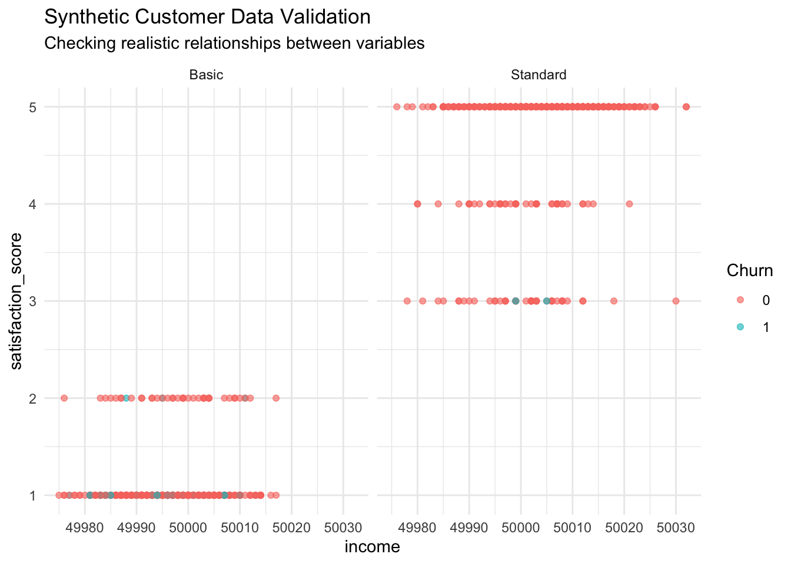

Implement Retrieval-Augmented Generation (RAG) systems
Understand Model Context Protocol (MCP) applications
Design synthetic data generation workflows
Explore the future of context engineering vs. prompt engineering
Anticipate future developments in GenAI for data science
5.2 4.1 Retrieval-Augmented Generation (RAG): Concept, History, and Advantages
5.2.1 What is RAG?
Retrieval-Augmented Generation (RAG) is an architecture that combines large language models (LLMs) with external information retrieval systems. Instead of relying solely on a model’s static internal knowledge, RAG dynamically retrieves relevant documents or facts from external sources and feeds them into the LLM as context for response generation.
5.2.2 Why Was RAG Developed?
Static Training Data Limitation: Traditional LLMs are trained on a fixed dataset and cannot access new information after training. Their knowledge is “frozen” at the time of their last update.
Hallucination and Factuality: LLMs often generate plausible-sounding but incorrect or outdated information, especially for recent events or niche topics.
RAG’s Solution: By retrieving up-to-date and domain-specific information at inference time, RAG systems can ground their responses in real evidence, improve factual accuracy, and reduce hallucinations.
5.2.3 How RAG Works: Flowchart
Show the code
library(DiagrammeR)grViz("digraph LLM_Pipeline { graph [rankdir = TB, layout = dot] node [shape = box, style = filled, fillcolor = lightblue, fontname = Helvetica] A [label = 'User Query'] B [label = 'Query Processing'] C [label = 'Information Retrieval\\n(search external sources)'] D [label = 'Select Top-K Relevant Documents'] E [label = 'Context Augmentation\\n(add retrieved docs to prompt)'] F [label = 'LLM Generation\\n(generate answer using context)'] G [label = 'Response to User'] A -> B -> C -> D -> E -> F -> G}")
Explanation of Steps:
User Query: The user asks a question or makes a request.
Query Processing: The system reformulates the query for retrieval.
Information Retrieval: The system searches external sources.
Select Top-K Documents: The most relevant documents are selected.
Context Augmentation: These documents are added to the LLM’s input prompt.
LLM Generation: The LLM generates a response, using both its internal knowledge and the retrieved context.
Response to User: The grounded, evidence-based answer is returned.
5.2.4 Why is RAG Better Than Static LLMs?
Dynamic Knowledge: RAG can access the latest information, overcoming the “knowledge cut-off” of static LLMs.
Reduced Hallucination: By grounding answers in retrieved evidence, RAG mitigates the risk of making up facts.
Domain Adaptability: RAG can specialize in any domain by connecting to relevant databases or corpora, without retraining the LLM.
Transparency: RAG can cite sources, increasing trust and interpretability.
5.2.5 Example: RAG in Practice
Suppose a user asks: “What are the latest COVID-19 statistics in Taiwan?”
A static LLM (trained in 2023) cannot answer accurately.
A RAG system retrieves the latest statistics from a government database or news API, includes them in the prompt, and the LLM summarizes and communicates the answer.
Benefits of RAG (Lewis et al. 2020; Pinecone 2024):
Enhanced accuracy: Up-to-date, factual information from external sources
Reduced hallucinations: Grounding responses in verified information
Domain customization: Integration with specialized knowledge bases
Transparency: Ability to cite sources and provide evidence
5.2.5.1 Sample RAG Implementation
Show the code
# Simulating RAG System for Data Science Knowledgelibrary(dplyr)library(stringr)# Create a simple knowledge basedata_science_kb <-data.frame(document_id =1:10,content =c("Cross-validation is essential for model evaluation to prevent overfitting","Feature engineering involves creating new variables from existing data","The bias-variance tradeoff is fundamental to machine learning model performance","Exploratory data analysis should always precede model building","Data cleaning typically consumes 80% of a data scientist's time","Correlation does not imply causation in statistical analysis","Ensemble methods often outperform single models in predictive accuracy","Data visualization is crucial for communicating insights effectively","Missing data imputation requires careful consideration of the missingness mechanism","Statistical significance does not always indicate practical significance" ),keywords =c("cross-validation, model evaluation, overfitting","feature engineering, variables, data transformation","bias-variance tradeoff, machine learning, model performance","exploratory data analysis, EDA, model building","data cleaning, preprocessing, time management","correlation, causation, statistical analysis","ensemble methods, model performance, accuracy","data visualization, communication, insights","missing data, imputation, missingness","statistical significance, practical significance, interpretation" ),relevance_score =runif(10, 0.7, 1.0))# RAG retrieval functionrag_retrieval <-function(query, knowledge_base, top_k =3) { query_words <-tolower(unlist(strsplit(query, "\\s+"))) kb_with_scores <- knowledge_base %>%rowwise() %>%mutate(query_relevance =sum(sapply(query_words, function(word) {grepl(word, tolower(content)) +grepl(word, tolower(keywords)) })) ) %>%arrange(desc(query_relevance)) %>%slice_head(n = top_k)return(kb_with_scores)}# RAG generation functionrag_generate_response <-function(query, retrieved_docs) { context <-paste(retrieved_docs$content, collapse =" ") response <-paste0("Based on the retrieved knowledge: ","\n\nQuery: ", query,"\n\nRelevant Information:\n",paste(retrieved_docs$content, collapse ="\n"),"\n\nSynthesized Response: ","The retrieved documents indicate that ", tolower(substr(query, 1, nchar(query)-1))," involves multiple considerations from the data science literature." )return(list(response = response,sources = retrieved_docs$document_id,context_used = context ))}# Demonstrate RAG systemuser_query <-"How should I evaluate my machine learning model?"retrieved <-rag_retrieval(user_query, data_science_kb)rag_response <-rag_generate_response(user_query, retrieved)cat("RAG System Response:\n")
RAG System Response:
Show the code
cat(rag_response$response)
Based on the retrieved knowledge:
Query: How should I evaluate my machine learning model?
Relevant Information:
The bias-variance tradeoff is fundamental to machine learning model performance
Exploratory data analysis should always precede model building
Cross-validation is essential for model evaluation to prevent overfitting
Ensemble methods often outperform single models in predictive accuracy
Feature engineering involves creating new variables from existing data
Data cleaning typically consumes 80% of a data scientist's time
Correlation does not imply causation in statistical analysis
Data visualization is crucial for communicating insights effectively
Missing data imputation requires careful consideration of the missingness mechanism
Statistical significance does not always indicate practical significance
Synthesized Response: The retrieved documents indicate that how should i evaluate my machine learning model involves multiple considerations from the data science literature.
5.2.6 Sample RAG Implementation: Interpretation
The sample RAG code demonstrates:
Creating a mini knowledge base (data frame of facts and keywords).
Retrieving the top relevant documents using keyword matching.
Synthesizing a response by combining the user query and retrieved facts.
The output is a context-aware answer, referencing the specific documents used.
Interpretation:
This approach shows how RAG systems can “look up” supporting information at runtime, ensuring answers are up-to-date and verifiable—something static LLMs cannot do.
5.3 4.2 Model Context Protocol (MCP): Impact and Innovation
5.3.1 What is MCP?
Model Context Protocol (MCP) is a standard that enables LLMs to interact with external tools, APIs, and data sources in a structured, programmatic way. MCP defines how an LLM can call functions, query databases, or use plugins during a conversation.
5.3.2 What Impact Does MCP Have?
Tool Use: LLMs can perform actions (e.g., run code, fetch live data, manipulate files) rather than just generate text.
Workflow Automation: Enables AI agents to orchestrate complex tasks, integrating multiple tools and data sources.
Interactivity: Users can have more dynamic, actionable conversations (e.g., “Plot this data and email me the chart”).
Ecosystem Expansion: MCP allows developers to build new tools and services that plug directly into LLM workflows.
5.3.3 What New Capabilities Does MCP Bring?
Beyond Text Generation: LLMs become “doers” as well as “talkers”—they can execute, retrieve, and process information in real time.
Personalization: AI can access user files, calendars, or preferences to tailor responses and actions.
Reliability: By delegating specialized tasks to external tools (e.g., a calculator for math), LLMs can provide more accurate and robust outputs.
5.4 4.3 Synthetic Data: Silicon Sampling and Beyond
5.4.1 What is Synthetic Data?
Synthetic data refers to artificially generated data that mimics the statistical properties of real datasets. It is used for privacy protection, testing, simulation, and augmenting training data.
5.4.2 Silicon Sampling (Argyle et al. 2023)
Silicon sampling is a method for generating synthetic survey data using LLMs or similar generative models. The process involves:
Training a model on real survey data.
Generating new, realistic individual-level responses that preserve the joint distribution of variables.
Validating the synthetic data to ensure it matches key properties of the original.
Advantages: - Enables sharing and analysis of sensitive data without privacy risks. - Supports simulation studies for policy analysis or experimental design.
Reference:
Argyle, Lisa P., Ethan C. Busby, Nancy Fulda, Joshua R. Gubler, Christopher Rytting, and David Wingate. “Out of one, many: Using language models to simulate human samples.” Political Analysis 31, no. 3 (2023): 337-351.
5.4.3 Agent-Based Modeling, AI Agents, and Agentic AI: What’s the Difference?
Concept
Description
Example Use Case
Agent-Based Modeling
Simulation approach where many autonomous “agents” interact based on simple rules.
Modeling voter behavior in elections
AI Agent
A software entity that can perceive, reason, and act autonomously in a digital environment.
Chatbot that schedules meetings
Agentic AI
Advanced AI systems capable of pursuing goals, adapting, and collaborating with humans
Autonomous research assistant that plans, learns, and executes tasks
Key Differences:
Agent-Based Modeling is a simulation technique in social science and complex systems.
AI Agents are practical software tools that perform tasks (can be simple or complex).
Agentic AI refers to emerging, more autonomous and adaptive AI systems that can set and pursue their own objectives, often with multi-step reasoning and collaboration.
customer_id age income experience_years
Min. : 1.0 Min. :18.00 Min. :49975 Min. : 0.00
1st Qu.: 250.8 1st Qu.:29.00 1st Qu.:49994 1st Qu.:18.00
Median : 500.5 Median :35.00 Median :50000 Median :25.00
Mean : 500.5 Mean :35.42 Mean :50000 Mean :24.43
3rd Qu.: 750.2 3rd Qu.:42.00 3rd Qu.:50007 3rd Qu.:32.00
Max. :1000.0 Max. :67.00 Max. :50032 Max. :40.00
satisfaction_score churn_probability churn segment
Min. :1.000 Min. :0.0006705 Min. :0.000 Length:1000
1st Qu.:1.000 1st Qu.:0.0041187 1st Qu.:0.000 Class :character
Median :3.000 Median :0.0194273 Median :0.000 Mode :character
Mean :2.996 Mean :0.0482846 Mean :0.049
3rd Qu.:5.000 3rd Qu.:0.0817124 3rd Qu.:0.000
Max. :5.000 Max. :0.2999137 Max. :1.000
Show the code
ggplot(synthetic_customers, aes(x = income, y = satisfaction_score, color =factor(churn))) +geom_point(alpha =0.6) +facet_wrap(~segment) +theme_minimal() +labs(title ="Synthetic Customer Data Validation",subtitle ="Checking realistic relationships between variables",color ="Churn")

5.4.4 4.4 Context Engineering vs. Prompt Engineering
The evolution from prompt engineering to context engineering represents a fundamental shift in AI interaction paradigms (Lakera AI 2025; Contextual AI 2024; Prompting Guide 2025).
5.4.4.1 Context Engineering Definition (Lakera AI 2025; Contextual AI 2024)
Context engineering is the discipline of designing and building dynamic systems that provide the right information and tools, in the right format, at the right time, to give an LLM everything it needs to accomplish a task (Lakera AI 2025).
5.4.4.2 Key Differences (Lakera AI 2025; Contextual AI 2024; Prompting Guide 2025)
Aspect
Prompt Engineering
Context Engineering
Scope
Single prompt optimization
System-level design
Focus
How to ask
What information to provide
Approach
String crafting
Information architecture
Context Window
Limited consideration
Central design consideration
Persistence
Stateless interactions
Stateful system design
Complexity
Simple to moderate
System-level complexity
5.4.4.3 Context Engineering Components (Lakera AI 2025; Prompting Guide 2025)
Information Architecture:
Instructions/System prompts
User input and queries
Short-term memory (conversation history)
Long-term memory (persistent knowledge)
Retrieved information (RAG systems)
Available tools and their definitions
Structured output specifications
Dynamic Context Management:
Real-time context optimization
Token limit management
Information prioritization
Context compression techniques
5.4.5 4.5 Future Trends in GenAI for Data Science
5.4.5.1 Emerging Paradigms (Anthropic 2024; Bito 2025; Dallas Data Science Academy 2025)
1. Agentic AI Systems (Anthropic 2024)
Autonomous AI agents for complex data science workflows
Multi-agent collaboration for large-scale analysis projects
Adaptive learning and improvement capabilities
2. Multimodal Integration (Monterail 2023)
Integration of text, images, audio, and structured data analysis
Cross-modal insight generation and validation
Unified analytical frameworks for diverse data types
Capstone Project: Students implement an integrated GenAI data science system:
RAG Implementation: Build a knowledge retrieval system for domain-specific queries
Synthetic Data Pipeline: Create realistic synthetic datasets for analysis
Context Engineering: Design dynamic context management for sustained AI interaction
Collaborative Workflow: Demonstrate human-AI collaboration throughout the process
Future Visioning: Propose innovative applications of emerging GenAI technologies
5.7 References
Argyle, Lisa P., Ethan C. Busby, Nancy Fulda, Joshua R. Gubler, Christopher Rytting, and David Wingate. “Out of one, many: Using language models to simulate human samples.” Political Analysis 31, no. 3 (2023): 337-351. Aisera. 2025. “What is Human AI Collaboration?” Aisera Blog, May 29. https://aisera.com/blog/human-ai-collaboration/.
Anthropic. 2024. “Agentic AI: The Next Frontier.” Anthropic Blog, April 17. https://www.anthropic.com/blog/agentic-ai.
Contextual AI. 2024. “What is Context Engineering?” Contextual AI Blog, February 12. https://contextual.ai/blog/context-engineering.
Dallas Data Science Academy. 2025. “Integrating Generative AI in Data Science Projects.” Dallas Data Science Academy Blog, January 6. https://dallasdatascienceacademy.org/blog/integrating-generative-ai-in-data-science-projects.
Decodo. 2025. “How to Use LLM for Data Analysis: A Comprehensive Guide.” Decodo Blog, April 15. https://decodo.com/blog/llm-for-data-analysis.
Graphite. 2025. “Understanding ‘Vibe Coding,’ the Future of AI-Driven Development.” Graphite Blog, July 8. https://graphite.dev/guides/understanding-vibe-coding.
Kaur, Harleen, et al. 2022. “A Comprehensive Review on Synthetic Data Generation for Machine Learning.” ACM Computing Surveys 55(9): 1-38.
Lakera AI. 2025. “The Ultimate Guide to Prompt Engineering in 2025.” Lakera AI Blog, May 21. https://www.lakera.ai/blog/prompt-engineering-guide.
LangChain. 2024. “Model Context Protocol (MCP): A New Standard for AI Tooling.” LangChain Docs. https://docs.langchain.com/docs/mcp.
Lewis, Patrick, et al. 2020. “Retrieval-Augmented Generation for Knowledge-Intensive NLP Tasks.” Advances in Neural Information Processing Systems 33: 9459–9474.
Monterail. 2023. “AI-Powered Coding Assistants: Best Practices to Boost Software Development.” Monterail Blog, September 11. https://www.monterail.com/blog/ai-powered-coding-assistants-best-practices.
OpenAI. 2024. “Retrieval-Augmented Generation (RAG) and Model Context Protocol (MCP): Technical Overview.” OpenAI Technical Reports. https://openai.com/research/rag-mcp.
Pinecone. 2024. “What is Retrieval-Augmented Generation (RAG)?” Pinecone Blog, March 12. https://www.pinecone.io/learn/retrieval-augmented-generation/.
Prompting Guide. 2025. “General Tips for Designing Prompts.” Prompt Engineering Guide, June 7. https://www.promptingguide.ai/introduction/tips.
Source Code
---title: "Chapter 4: Advanced Applications – RAG, MCP, and Future Trends"format: html---## Learning Objectives- Implement Retrieval-Augmented Generation (RAG) systems- Understand Model Context Protocol (MCP) applications- Design synthetic data generation workflows- Explore the future of context engineering vs. prompt engineering- Anticipate future developments in GenAI for data science## 4.1 Retrieval-Augmented Generation (RAG): Concept, History, and Advantages### What is RAG?Retrieval-Augmented Generation (RAG) is an architecture that combines large language models (LLMs) with external information retrieval systems. Instead of relying solely on a model’s static internal knowledge, RAG dynamically retrieves relevant documents or facts from external sources and feeds them into the LLM as context for response generation.### Why Was RAG Developed?- **Static Training Data Limitation:** Traditional LLMs are trained on a fixed dataset and cannot access new information after training. Their knowledge is “frozen” at the time of their last update.- **Hallucination and Factuality:** LLMs often generate plausible-sounding but incorrect or outdated information, especially for recent events or niche topics.- **RAG’s Solution:** By retrieving up-to-date and domain-specific information at inference time, RAG systems can ground their responses in real evidence, improve factual accuracy, and reduce hallucinations.### How RAG Works: Flowchart```{r}library(DiagrammeR)grViz("digraph LLM_Pipeline { graph [rankdir = TB, layout = dot] node [shape = box, style = filled, fillcolor = lightblue, fontname = Helvetica] A [label = 'User Query'] B [label = 'Query Processing'] C [label = 'Information Retrieval\\n(search external sources)'] D [label = 'Select Top-K Relevant Documents'] E [label = 'Context Augmentation\\n(add retrieved docs to prompt)'] F [label = 'LLM Generation\\n(generate answer using context)'] G [label = 'Response to User'] A -> B -> C -> D -> E -> F -> G}")```**Explanation of Steps:**1. **User Query:** The user asks a question or makes a request.2. **Query Processing:** The system reformulates the query for retrieval.3. **Information Retrieval:** The system searches external sources.4. **Select Top-K Documents:** The most relevant documents are selected.5. **Context Augmentation:** These documents are added to the LLM’s input prompt.6. **LLM Generation:** The LLM generates a response, using both its internal knowledge and the retrieved context.7. **Response to User:** The grounded, evidence-based answer is returned.### Why is RAG Better Than Static LLMs?- **Dynamic Knowledge:** RAG can access the latest information, overcoming the “knowledge cut-off” of static LLMs.- **Reduced Hallucination:** By grounding answers in retrieved evidence, RAG mitigates the risk of making up facts.- **Domain Adaptability:** RAG can specialize in any domain by connecting to relevant databases or corpora, without retraining the LLM.- **Transparency:** RAG can cite sources, increasing trust and interpretability.### Example: RAG in PracticeSuppose a user asks: *"What are the latest COVID-19 statistics in Taiwan?"*- A static LLM (trained in 2023) cannot answer accurately.- A RAG system retrieves the latest statistics from a government database or news API, includes them in the prompt, and the LLM summarizes and communicates the answer.**Benefits of RAG** (Lewis et al. 2020; Pinecone 2024):- Enhanced accuracy: Up-to-date, factual information from external sources- Reduced hallucinations: Grounding responses in verified information- Domain customization: Integration with specialized knowledge bases- Transparency: Ability to cite sources and provide evidence#### Sample RAG Implementation```{r}#| message: false#| warning: false# Simulating RAG System for Data Science Knowledgelibrary(dplyr)library(stringr)# Create a simple knowledge basedata_science_kb <-data.frame(document_id =1:10,content =c("Cross-validation is essential for model evaluation to prevent overfitting","Feature engineering involves creating new variables from existing data","The bias-variance tradeoff is fundamental to machine learning model performance","Exploratory data analysis should always precede model building","Data cleaning typically consumes 80% of a data scientist's time","Correlation does not imply causation in statistical analysis","Ensemble methods often outperform single models in predictive accuracy","Data visualization is crucial for communicating insights effectively","Missing data imputation requires careful consideration of the missingness mechanism","Statistical significance does not always indicate practical significance" ),keywords =c("cross-validation, model evaluation, overfitting","feature engineering, variables, data transformation","bias-variance tradeoff, machine learning, model performance","exploratory data analysis, EDA, model building","data cleaning, preprocessing, time management","correlation, causation, statistical analysis","ensemble methods, model performance, accuracy","data visualization, communication, insights","missing data, imputation, missingness","statistical significance, practical significance, interpretation" ),relevance_score =runif(10, 0.7, 1.0))# RAG retrieval functionrag_retrieval <-function(query, knowledge_base, top_k =3) { query_words <-tolower(unlist(strsplit(query, "\\s+"))) kb_with_scores <- knowledge_base %>%rowwise() %>%mutate(query_relevance =sum(sapply(query_words, function(word) {grepl(word, tolower(content)) +grepl(word, tolower(keywords)) })) ) %>%arrange(desc(query_relevance)) %>%slice_head(n = top_k)return(kb_with_scores)}# RAG generation functionrag_generate_response <-function(query, retrieved_docs) { context <-paste(retrieved_docs$content, collapse =" ") response <-paste0("Based on the retrieved knowledge: ","\n\nQuery: ", query,"\n\nRelevant Information:\n",paste(retrieved_docs$content, collapse ="\n"),"\n\nSynthesized Response: ","The retrieved documents indicate that ", tolower(substr(query, 1, nchar(query)-1))," involves multiple considerations from the data science literature." )return(list(response = response,sources = retrieved_docs$document_id,context_used = context ))}# Demonstrate RAG systemuser_query <-"How should I evaluate my machine learning model?"retrieved <-rag_retrieval(user_query, data_science_kb)rag_response <-rag_generate_response(user_query, retrieved)cat("RAG System Response:\n")cat(rag_response$response)```### Sample RAG Implementation: InterpretationThe sample RAG code demonstrates:- Creating a mini knowledge base (data frame of facts and keywords).- Retrieving the top relevant documents using keyword matching.- Synthesizing a response by combining the user query and retrieved facts.- The output is a context-aware answer, referencing the specific documents used.**Interpretation:** This approach shows how RAG systems can “look up” supporting information at runtime, ensuring answers are up-to-date and verifiable—something static LLMs cannot do.## 4.2 Model Context Protocol (MCP): Impact and Innovation### What is MCP?Model Context Protocol (MCP) is a standard that enables LLMs to interact with external tools, APIs, and data sources in a structured, programmatic way. MCP defines how an LLM can call functions, query databases, or use plugins during a conversation.### What Impact Does MCP Have?- **Tool Use:** LLMs can perform actions (e.g., run code, fetch live data, manipulate files) rather than just generate text.- **Workflow Automation:** Enables AI agents to orchestrate complex tasks, integrating multiple tools and data sources.- **Interactivity:** Users can have more dynamic, actionable conversations (e.g., “Plot this data and email me the chart”).- **Ecosystem Expansion:** MCP allows developers to build new tools and services that plug directly into LLM workflows.### What New Capabilities Does MCP Bring?- **Beyond Text Generation:** LLMs become “doers” as well as “talkers”—they can execute, retrieve, and process information in real time.- **Personalization:** AI can access user files, calendars, or preferences to tailor responses and actions.- **Reliability:** By delegating specialized tasks to external tools (e.g., a calculator for math), LLMs can provide more accurate and robust outputs.## 4.3 Synthetic Data: Silicon Sampling and Beyond### What is Synthetic Data?Synthetic data refers to artificially generated data that mimics the statistical properties of real datasets. It is used for privacy protection, testing, simulation, and augmenting training data.### Silicon Sampling (Argyle et al. 2023)**Silicon sampling** is a method for generating synthetic survey data using LLMs or similar generative models. The process involves:- Training a model on real survey data.- Generating new, realistic individual-level responses that preserve the joint distribution of variables.- Validating the synthetic data to ensure it matches key properties of the original.**Advantages:**- Enables sharing and analysis of sensitive data without privacy risks.- Supports simulation studies for policy analysis or experimental design.**Reference:** Argyle, Lisa P., Ethan C. Busby, Nancy Fulda, Joshua R. Gubler, Christopher Rytting, and David Wingate. "Out of one, many: Using language models to simulate human samples." *Political Analysis* 31, no. 3 (2023): 337-351.### Agent-Based Modeling, AI Agents, and Agentic AI: What’s the Difference?| Concept | Description | Example Use Case ||------------------------|---------------------------------------------------------------------------------------------|--------------------------------------------|| Agent-Based Modeling | Simulation approach where many autonomous “agents” interact based on simple rules. | Modeling voter behavior in elections || AI Agent | A software entity that can perceive, reason, and act autonomously in a digital environment. | Chatbot that schedules meetings || Agentic AI | Advanced AI systems capable of pursuing goals, adapting, and collaborating with humans | Autonomous research assistant that plans, learns, and executes tasks |**Key Differences:**- **Agent-Based Modeling** is a simulation technique in social science and complex systems.- **AI Agents** are practical software tools that perform tasks (can be simple or complex).- **Agentic AI** refers to emerging, more autonomous and adaptive AI systems that can set and pursue their own objectives, often with multi-step reasoning and collaboration.#### Sample Synthetic Data Generation```{r}#| message: false# Synthetic Data Generation for Data Science Traininglibrary(MASS)library(ggplot2)library(tidyverse)generate_synthetic_customers <-function(n =1000, seed =123) {set.seed(seed) correlation_matrix <-matrix(c(1.0, 0.6, -0.4, 0.3,0.6, 1.0, -0.2, 0.5,-0.4, -0.2, 1.0, -0.1,0.3, 0.5, -0.1, 1.0 ), nrow =4) base_vars <-mvrnorm(n, mu =c(35, 50000, 25, 3), Sigma = correlation_matrix *100) synthetic_data <-data.frame(customer_id =1:n,age =pmax(18, pmin(80, round(base_vars[,1]))),income =pmax(20000, round(base_vars[,2])),experience_years =pmax(0, pmin(40, round(base_vars[,3]))),satisfaction_score =pmax(1, pmin(5, round(base_vars[,4]))) ) %>%mutate(churn_probability =plogis(-2+0.02*age -0.00003*income +0.05*experience_years -0.8*satisfaction_score +rnorm(n, 0, 0.5)),churn =rbinom(n, 1, churn_probability),segment =case_when( income >70000& satisfaction_score >=4~"Premium", income >45000& satisfaction_score >=3~"Standard",TRUE~"Basic" ) ) return(synthetic_data)}synthetic_customers <-generate_synthetic_customers(1000)cat("Synthetic Data Summary:\n")summary(synthetic_customers)ggplot(synthetic_customers, aes(x = income, y = satisfaction_score, color =factor(churn))) +geom_point(alpha =0.6) +facet_wrap(~segment) +theme_minimal() +labs(title ="Synthetic Customer Data Validation",subtitle ="Checking realistic relationships between variables",color ="Churn")```### 4.4 Context Engineering vs. Prompt EngineeringThe evolution from prompt engineering to context engineering represents a fundamental shift in AI interaction paradigms (Lakera AI 2025; Contextual AI 2024; Prompting Guide 2025).#### Context Engineering Definition (Lakera AI 2025; Contextual AI 2024)Context engineering is the discipline of designing and building dynamic systems that provide the right information and tools, in the right format, at the right time, to give an LLM everything it needs to accomplish a task (Lakera AI 2025).#### Key Differences (Lakera AI 2025; Contextual AI 2024; Prompting Guide 2025)| Aspect | Prompt Engineering | Context Engineering ||-------------------|-----------------------------|-------------------------------|| **Scope** | Single prompt optimization | System-level design || **Focus** | How to ask | What information to provide || **Approach** | String crafting | Information architecture || **Context Window**| Limited consideration | Central design consideration || **Persistence** | Stateless interactions | Stateful system design || **Complexity** | Simple to moderate | System-level complexity |#### Context Engineering Components (Lakera AI 2025; Prompting Guide 2025)1. **Information Architecture:** - Instructions/System prompts - User input and queries - Short-term memory (conversation history) - Long-term memory (persistent knowledge) - Retrieved information (RAG systems) - Available tools and their definitions - Structured output specifications2. **Dynamic Context Management:** - Real-time context optimization - Token limit management - Information prioritization - Context compression techniques### 4.5 Future Trends in GenAI for Data Science#### Emerging Paradigms (Anthropic 2024; Bito 2025; Dallas Data Science Academy 2025)**1. Agentic AI Systems** (Anthropic 2024)- Autonomous AI agents for complex data science workflows- Multi-agent collaboration for large-scale analysis projects- Adaptive learning and improvement capabilities**2. Multimodal Integration** (Monterail 2023)- Integration of text, images, audio, and structured data analysis- Cross-modal insight generation and validation- Unified analytical frameworks for diverse data types**3. Democratization Acceleration** (Bito 2025; Aisera 2025)- Natural language programming interfaces becoming mainstream- Reduced technical barriers for non-expert users- Automated ML pipeline generation and optimization**4. Ethical AI and Responsible Development** (Bito 2025)- Enhanced bias detection and mitigation systems- Transparent AI decision-making processes- Responsible AI frameworks for data science applications## Summary Table: Key Innovations| Technology | What It Does | Why It Matters ||---------------|-------------------------------------------|---------------------------------------|| RAG | Brings live, retrieved info to LLMs | Up-to-date, grounded, transparent || MCP | Lets LLMs use external tools & APIs | Actionable, interactive, extensible || Silicon Sampling | Generates privacy-preserving synthetic data | Enables open research, simulation || Agentic AI | Autonomous, goal-driven AI agents | Next-gen AI with planning/adaptation |## Hands-on Exercise 4: Advanced GenAI Applications**Capstone Project:** Students implement an integrated GenAI data science system:1. **RAG Implementation:** Build a knowledge retrieval system for domain-specific queries2. **Synthetic Data Pipeline:** Create realistic synthetic datasets for analysis3. **Context Engineering:** Design dynamic context management for sustained AI interaction4. **Collaborative Workflow:** Demonstrate human-AI collaboration throughout the process5. **Future Visioning:** Propose innovative applications of emerging GenAI technologies## References- Argyle, Lisa P., Ethan C. Busby, Nancy Fulda, Joshua R. Gubler, Christopher Rytting, and David Wingate. "Out of one, many: Using language models to simulate human samples." *Political Analysis* 31, no. 3 (2023): 337-351.Aisera. 2025. "What is Human AI Collaboration?" *Aisera Blog*, May 29. https://aisera.com/blog/human-ai-collaboration/.Anthropic. 2024. "Agentic AI: The Next Frontier." *Anthropic Blog*, April 17. https://www.anthropic.com/blog/agentic-ai.Bito. 2025. "AI Documentation Generator." *Bito AI*. https://bito.ai/blog/ai-documentation-generator/.Contextual AI. 2024. "What is Context Engineering?" *Contextual AI Blog*, February 12. https://contextual.ai/blog/context-engineering.Dallas Data Science Academy. 2025. "Integrating Generative AI in Data Science Projects." *Dallas Data Science Academy Blog*, January 6. https://dallasdatascienceacademy.org/blog/integrating-generative-ai-in-data-science-projects.Decodo. 2025. "How to Use LLM for Data Analysis: A Comprehensive Guide." *Decodo Blog*, April 15. https://decodo.com/blog/llm-for-data-analysis.Graphite. 2025. "Understanding 'Vibe Coding,' the Future of AI-Driven Development." *Graphite Blog*, July 8. https://graphite.dev/guides/understanding-vibe-coding.Kaur, Harleen, et al. 2022. "A Comprehensive Review on Synthetic Data Generation for Machine Learning." *ACM Computing Surveys* 55(9): 1-38.Lakera AI. 2025. "The Ultimate Guide to Prompt Engineering in 2025." *Lakera AI Blog*, May 21. https://www.lakera.ai/blog/prompt-engineering-guide.LangChain. 2024. "Model Context Protocol (MCP): A New Standard for AI Tooling." *LangChain Docs*. https://docs.langchain.com/docs/mcp.Lewis, Patrick, et al. 2020. "Retrieval-Augmented Generation for Knowledge-Intensive NLP Tasks." *Advances in Neural Information Processing Systems* 33: 9459–9474.Monterail. 2023. "AI-Powered Coding Assistants: Best Practices to Boost Software Development." *Monterail Blog*, September 11. https://www.monterail.com/blog/ai-powered-coding-assistants-best-practices.OpenAI. 2024. "Retrieval-Augmented Generation (RAG) and Model Context Protocol (MCP): Technical Overview." *OpenAI Technical Reports*. https://openai.com/research/rag-mcp.Pinecone. 2024. "What is Retrieval-Augmented Generation (RAG)?" *Pinecone Blog*, March 12. https://www.pinecone.io/learn/retrieval-augmented-generation/.Prompting Guide. 2025. "General Tips for Designing Prompts." *Prompt Engineering Guide*, June 7. https://www.promptingguide.ai/introduction/tips.